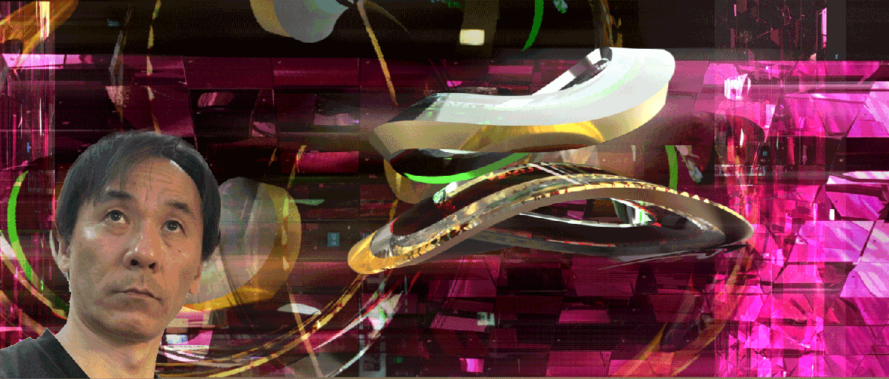

Masahiro Doshita

Welcome To My World!
こんにちは！堂下雅弘です！
職務経験
店長やってました！
なんでもやっちゃうフリーター歴32年（法人代表歴も32年）
神田駅30秒のところで漫画喫茶店長してました～。（+経営）
表参道3分のところでクリエイター向けBookCafe店長してました～。（+経営）
テキスタイルデザイン
グラフィックデザイン
写植・版下のころからやってます。
映像関連
Video Tosterでのカット編集のころから展示イベントでの映像制作
時間がかかるのでさすがにもう自分ではやってません。
展示会・イベント企画
企画～取材～台本作成～進行台本～運営計画～運営マニュアル～現場進行～現場運営仕切りまで
スペースデザイン
30年程前は香港とかの百貨店の店舗デザインをフロア単位で受注
15年程前までは日本のインテリア・ディスプレイ関連協会の年間の賞とかにエントリーし、
賞をいただいたりしましたが、いつでも年鑑とかに載せ、賞を狙える確信が持てたのと
興味が別のところに移り最近はエントリーしていません。
もっと革命的なものを創りたい！
最新の年鑑2誌には掲載されています。
志望動機
誰も作れない世界を創りたい！
アナログな現場でのモノづくりを長い間やってきました。
HoloLensが登場し、リアルとバーチャルが混在する世界がやってきます。
それらが入り混じったこれからの新しい世界をどう創るか？
リアルの座標軸と仮想の座標軸をどう一致させるか？
その精度をどう高めるか？
リアルの世界からバーチャルの世界へどう影響を与えるか？
バーチャルの世界からリアルの世界へどう影響を与えるか？
その時どういう物、サービスが必要なのか？
それをどう作るのか？
誰と創るのか？
どういう体制で作るのか？
自分は何ができるのか？
知識が足りない！
開発力が足りない！
スピードが足りない！
ネットワークが足りない！
これを解決するため志望しました！
プログラミング経験・実績
プログラミングの経験は2年くらいになります。
Web関連はあまりやっていません。
現在は Unity C#での HoloLensアプリ開発を行っています。
Raspberry Pi Arduinoの簡単なものはやったことがあります。
照度センサーでロボットアームを動かしたり、
PC内のUnityと連動させたりというレベルです。
UnityからOSCで舞台照明の連動をしました。
作りたいもの企画
HoloLensとIoTを絡めたものの開発を行いたいと考えています。
また、リアルとバーチャルの座標軸をどう一致させるかと
屋内測位に関しては、常に考えています。
アピールポイント
2015 慶應義塾大学 中村伊知哉教授の企画募集に応募
7000人から３人に選ばれ慶應義塾大学三田キャンパスにてプレゼンを行う。
「女の子が気軽に電子工作を体験できる学習キット エレクッキン」
2017 デジタルハリウッド大学大学院デジタルコンテンツ研究科入学(在学中)
現実空間の座標軸と仮想空間の座標軸を一致させることによる、
複数人での仮想空間、オブジェクト共有の研究を行う
2018 3月 ASCII STARTUP2018出展
2018 5月 NHK技研公開2018 メディア統合プラットフォーム展示
展示デザイン ゲームエンジンUnityからOSCによる舞台照明操作 演出 担当
2018 6月 サイネージEXPO 共同出展 VTuver 遠隔ネットワークシステム展示
2018 6月 Tokyo XR Meetup #23 出展
2018 9月 NextR 結成 HoloLensを使ったMRシェアリングバトル「のらねこふぁいとR」制作開始
2018 12月 「のらねこふぁいとR」 完成
2018 12月 SIGGRAPH ASIA2018出展
（コンピュータグラフィックスとインタラクティブ技術に関する世界的カンファレンス）
2019 2月 Microsoft 本社にて行われたHoloLensMeet Up 出展
2018 3月 第4回VRフェス出展
賞歴